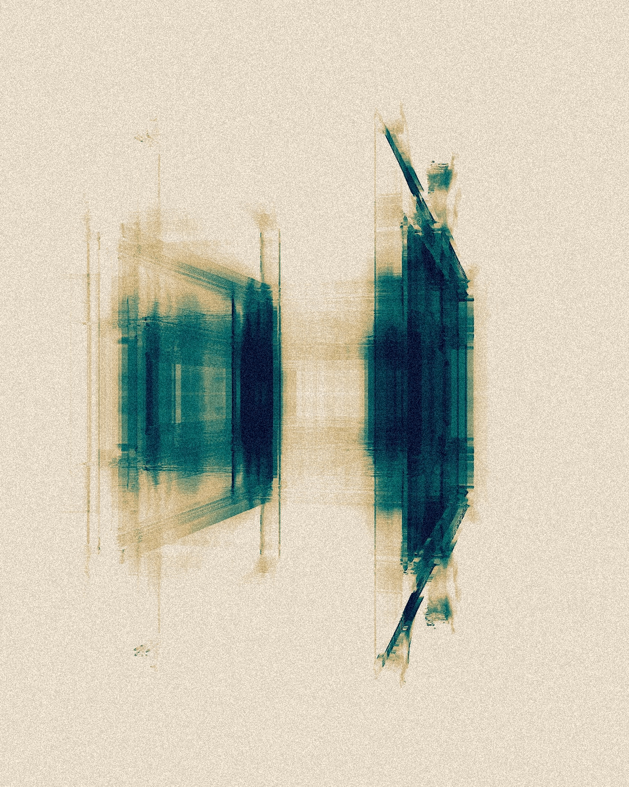
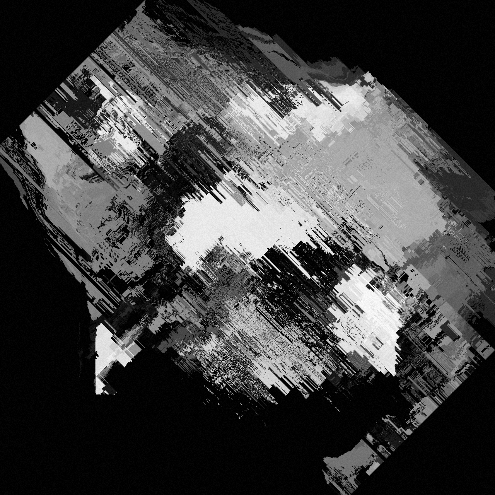

Visuals
About
I enjoy creating digital visuals in software.
I mainly use TouchDesigner but have also played around with three.js and p5.js.
I would love to combine web design with visuals for projects in the future for interactive and brand elevating experiences.
 References
If you're interested in checking out more from these tools, here are some links:
-
TouchDesigner
TouchDesigner is a visual development platform that equips you with the tools you need to create stunning realtime projects and rich user experiences.
-
Three.js
Three.js is a cross-browser JavaScript library and application programming interface (API) used to create and display animated 3D computer graphics in a web browser using WebGL.
-
p5.js
p5.js is a friendly tool for learning to code and make art. It is a free and open-source JavaScript library built by an inclusive, nurturing community. p5.js welcomes artists, designers, beginners, educators, and anyone else.